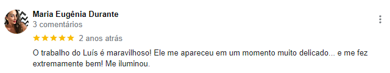
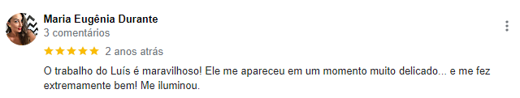

Luis Vilela
Colônia das Flores

Meu nome é Luis Vilela, sou estudante, palestrante e praticante da literatura espírita por mais de 30 anos, e trabalhei em instituições espíritas como médium psicofônico.
Constelador e facilitador quântico, atendendo com sessões de apometria há mais de 10 anos. Ministrocursos de apometria, capacitando os alunos aos atendimentos logo após a última aula.
Tenho conduzido os assistidos ao seu processo de auto-cura, trazendo curas relevantes, auxiliado pelos hospitais estelares, e laboratórios astrais, que são os grandes responsáveis por esses trabalhos incríveis.
Toda e qualquer informação sobre essa técnica deve ser mencionada ou discutida apenas com o facilitador, jamais em fóruns e quaisquer outros veículos que pulverizam internet e redes sociais.

O que é Apometria
É um conjunto de técnicas e princípios que tem a intenção de tratar, harmonizar e favorecer a consciência dos múltiplos aspectos que movimentam as energias humanas.
Na apometria você recebe um tratamento nos seus corpos astrais, tratamento de troca de energias densas e por isso utilizamos a física quântica e tem ligação na sessão com o Mestre Jesus.
Não é invasivo e não se recomenda uso de medicação ou ingestão de qualquer substância, apenas concentração, meditação, orações e outras atividades mentais.
É a medicina da nossa alma! Pra quem pensa que é religião, não é! Neste nível, quando vamos te ouvir e após um trabalho mental que orienta você a abandonar crenças limitantes e condicionantes, iniciamos uma anamnese para rastrearmos tudo que atrapalha sua vida.

Dúvidas frequêntes
-
O que apometria pode tratar?
Remove magias, obsessores, trata doenças psíquicas, insegurança, traumas, falta de propósito na vida, vida profissional, vida financeira, vida amorosa.
-
Qunto tempo dura umas sessão?
A duração da consulta e sessão é em média de 1 hora e 30 minutos, com anamnese do seu campo eletromagnético!
-
Qual o tempo do tratamento?
Na maioria dos casos, em uma sessão é possível tratar tudo. Em casos mais graves podem ser necessárias mais sessões.
-
Quando vou me sentir melhor?
A sensação de leveza e paz são observados nos primeiros minutos após a sua sessão.
-
Faz atendimento a distância?
Como o tratamento é nos corpos astrais é possível fazer atendimento presencial ou a distância.
-
Qualquer pessoa pode fazer?
Sim, qualquer pessoa pode ser tratada com apometria, o tratamento é acolhedor e todas as queixas são ouvidas.
-
Tratamento Presencial
É enviado um questionário para que seja criado o testemunho. Logo após é feita a anamnese (entrevista) para que possamos saber quais são as queixas do assistido.
Uma vez “rastreado” vamos iniciar o processo da aplicação da técnica, e ainda é feito uma análise no sistema de crenças, afins de que elas sejam apresentadas e subsequentemente removidas. Após a sessão todos sentem um bem estar jamais sentido antes.
Sejam bem vindos a essa experiência de cura na alma e nos corpos astrais.
-
Tratamento à Distância
O tratamento a distância é feito por vídeo chamada.
Como o tratamento é feito nos corpos astrais e não no corpo físico, é possível atender por vídeo chamada.
O assistido passa anteriormente por uma anamnese (entrevista) para que possamos saber quais são as queixas.
Uma vez "rastreado" vamos iniciar o processo da aplicação da técnica, e ainda é feito uma análise no sistema de crenças, afins de que elas sejam apresentadas e subsequentemente removidas. -
SEJA UM DE NOSSOS ALUNOS
O curso oferece todo apoio ao aluno com suas dúvidas e desafios nessa jornada.
Os alunos recebem capacitação para:
- Abrir e fechar o campo
- Desdobrar o assistido
- Remoção de chips e implantes
- Encaminhamento de obsessores
- Alinhamento dos chakras
- Alinhamento dos meridianos
- alinhamento do corpos sutis
- Acessar os hospitais estelares
- Acessar o Conselho Cármico
- Movimentos teóricos e práticos 19.59.22.jpg)
O que nossos pacientes dizem?
 
